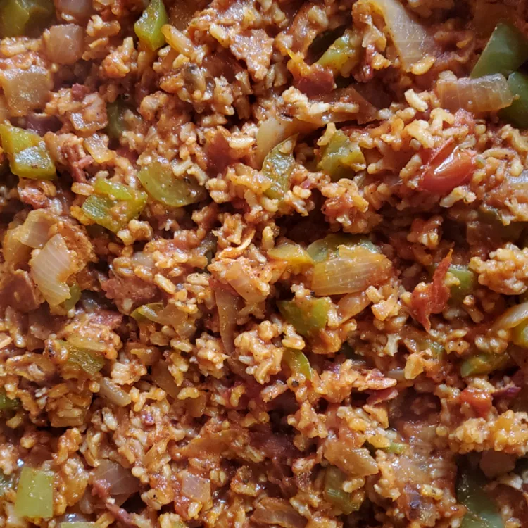

Back to Homepage
Spanish Rice Recipe from Budget Bytes

Description
This recipe will make your mouth water. It's considered a staple of spanish cuisine and all the good people of Spain consume it.
See below for the ingredients and steps to create.
Ingredients
- 2 Tbsp Olive Oil
- 2 Cloves Garlic
- 1/2 Tbsp Smoked Paprika
- 1 tsp Ground Cumin
- 1/2 tsp Dried Oregano
- 1/4 tsp Cayenne Pepper
- Fresh Black Pepper to taste
- 1 Yellow Onion
- 1 cup Long Grain White Rice
- 15 oz Canned Diced Tomatoes
- 15 oz Quartered Artichoke Hearts
- 19 oz Canned Chickpeas
- 1 1/2 cups Vegetable Broth
- 1/2 tsp Salt
- 1/4 bunch Fresh Parsley
- 1 Lemon
Steps to Complete
- Mince the garlic and add it to a large, deep skillet along with the olive oil. Cook over medium-low heat for 1 to 2 minutes till the garlic is soft and fragrant.
- Add the paprika, cumin, oregano, cayenne pepper and some fresh black pepper to the skille. Stir and saute the spices in the hot oil for one more minute.
- Dice the yellow onion and add it to the skillet. Saute the onion until it is soft and translucent for about 5 minutes.
- Add the long grain white rice and saute for 2 more minutes.
- Drain the chickpeas and artichoke hearts and add them to the skillet with the diced tomatoes, vegetable broth and salt.
- Rough chop the parsley and add it to the skillet, reserving a small amount to sprinkle over the finished dish. Stir all the ingredients in the skillet until evenly combined.
- Place a lid on the skillet and turn the heat up to medium-high. Once it reaches a boil, turn down the heat to low and let it simmer for 20 minutes. Make sure it's simmering the whole tim, and adjust the heat up slightly if necessary to keep it simmering.
- After simmering for 20 minutes, turn the heat off and let it rest 5 minuteswithout removing the lid. Finally, remove the lid, fluff with a fork and top with the remaining chopped parsley. Cut the lemon into wedges and squeeze the fresh juice over each bowl.